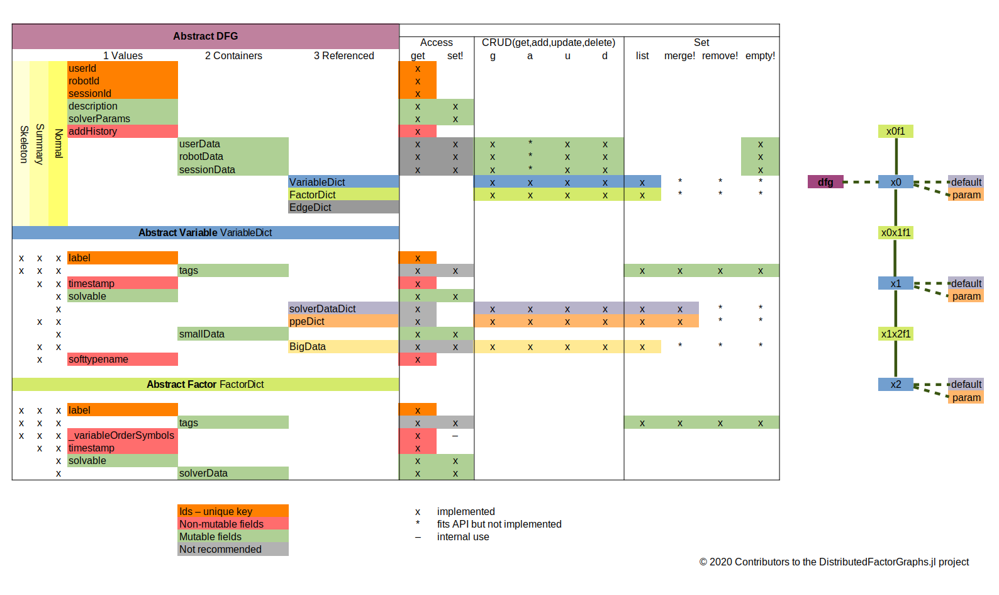

DistributedFactorGraphs.jl
Home
Getting Started
DFG Data Structures
Building Graphs
Using Graph Elements
Drawing Graphs
Quick API Reference
Function Reference
Getting Started
Quick API Reference
Edit on GitHub
Quick API Reference
Quick API Reference
